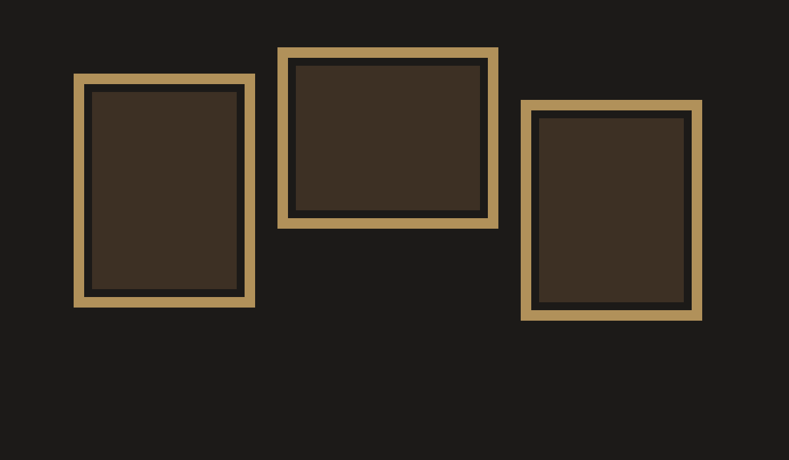

Decoração vintage
10 outubro 2026

Galerias de quadros e objetos antigos criam profundidade visual e trazem personalidade para o espaço.
Misture molduras de tamanhos diferentes e use iluminação indireta para destacar os detalhes.
10 outubro 2026

Galerias de quadros e objetos antigos criam profundidade visual e trazem personalidade para o espaço.
Misture molduras de tamanhos diferentes e use iluminação indireta para destacar os detalhes.